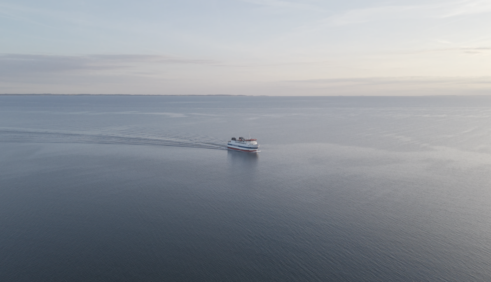
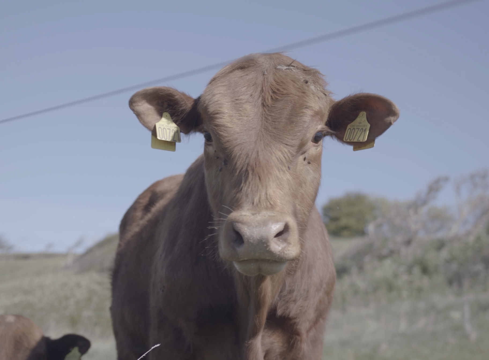
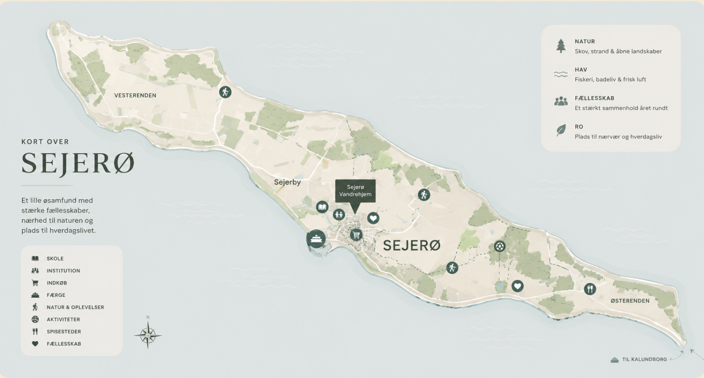

Hvordan fungerer skole, indkøb, færge og familieliv på øen? Her får du overblikket
På Sejerø handler livet om trygge rammer og stærke fællesskaber. Her er afstandene korte, tempoet lavere og nærværet større. Samtidig fungerer hverdagen stadig med skole, indkøb, arbejde, internet og fritidsaktiviteter, bare i et mere overskueligt tempo.
På Sejerø mødes børnene i små klasser med tæt kontakt mellem elever og lærere. Det skaber trygge rammer, stærke relationer og en hverdag, hvor alle bliver set og hørt.

Øens mindre fællesskaber giver børn mulighed for at vokse op i rolige og nære omgivelser, hvor hverdagen er præget af genkendelighed, nærvær og fællesskab.

Sejerø tilbyder daglige indkøbsmuligheder og lokale tilbud, som gør det nemt at få hverdagen til at fungere uden lange køreture.

Med stabil internetforbindelse og mulighed for hjemmearbejde kan mange kombinere arbejdsliv med et roligere familieliv tættere på naturen.

Færgen er en naturlig del af livet på Sejerø og skaber forbindelse til fastlandet i hverdagen, samtidig med at tempoet bliver lidt roligere.

Havet, naturen og de lokale aktiviteter skaber gode muligheder for fællesskab, fritidsliv og oplevelser året rundt.


Udfyld formularen, så kontakter en fagperson dig med mere viden om bolig, arbejde og livet på øen.